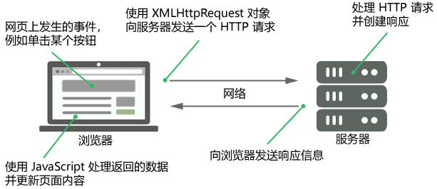

首页 > JavaScript
JS Ajax请求（简明教程）
Ajax 全称“Asynchronous JavaScript and XML”，译为“异步 JavaScript 和 XML”，程序员们习惯称之为“阿贾克斯”，它并不是一种技术，而是多种技术的综合体，其中包括 JavaScript、XML、JSON、DOM、CSS、HTML 以及最重要的 XMLHttpRequest 对象。通过 Ajax 可以异步从服务器请求数据并将数据更新到网页中，整个过程不需要重载（刷新）整个网页，可以将网页的内容更快的呈现给用户。
这里的异步是指，当程序执行到 Ajax 代码时，将 Ajax 代码交给另外一个线程来执行，不论执行结果如何，当前线程会继续向下执行。
因为 Ajax 请求是异步执行的，Ajax 请求发送之后，代码会继续向下执行，直至结束。
示例代码如下：
这里的异步是指，当程序执行到 Ajax 代码时，将 Ajax 代码交给另外一个线程来执行，不论执行结果如何，当前线程会继续向下执行。
提示：虽然 X 在 Ajax 中代表 XML，但是由于 JSON 的诸多优势（比如 JSON 属于 JavaScript 的一部分，而且更加轻量），目前 Ajax 中普遍使用 JSON 来传输数据。
Ajax 的工作原理
JavaScript 需要使用浏览器内置的 XMLHttpRequest 对象向服务器发送 HTTP 请求，并接收服务器响应的数据。提示：目前，所有的浏览器（Chrome、Firefox、IE7 及以上版本、Safari、Opera 等）都支持 XMLHttpRequest 对象。
下图演示了 Ajax 通信的工作原理：

图1：Ajax 工作原理
图1：Ajax 工作原理
因为 Ajax 请求是异步执行的，Ajax 请求发送之后，代码会继续向下执行，直至结束。
发送 Ajax 请求
要发送 Ajax 请求，首先需要实例化一个 XMLHttpRequest 对象，示例代码如下：var request = new XMLHttpRequest();
然后，使用 XMLHttpRequest 对象的 open() 方法来初始化一个请求，open() 方法的语法格式如下：XMLHttpRequest.open(method, url, async, user, password);
参数说明如下：- method：请求的类型（使用的 HTTP 方法），例如 GET、POST、PUT、HEAD、DELETE 等；
- url：请求的地址；
- async：可选参数，布尔类型，表示是否请求是否异步执行，默认值为 true；
- user：可选参数，表示用户名，主要用来认证，默认值为 null；
- password：可选参数，表示密码，同样用来认证，默认值为 null。
提示：与前面介绍的《Cookie》类似，Ajax 同样需要服务器环境才行。
示例代码如下：
var request = new XMLHttpRequest();
request.open('GET', 'test.php');
提示：请求地址一般为服务器端脚本文件，例如 .php、.asp 格式的文件，它们可以在服务器将响应信息发送给浏览器之前执行某些操作，例如从数据库中查询或写入数据。
最后，使用 XMLHttpRequest 对象的 send() 方法将请求发送到服务器，send() 方法的语法格式如下：XMLHttpRequest.send(body);
其中 body 是一个可选参数，表示请求主体，即请求中要发送的数据，如果不需要在请求时发送数据，例如发送 GET 请求，就可以忽略该参数或者传入 null。提示：如果请求方法为 GET 或 HEAD，则应该将请求主体设置为 null 或者忽略请求主体。
示例代码如下：
var request = new XMLHttpRequest();
request.open('GET', './test.php');
request.send(null);
检索响应信息
请求发送成功后（即使用 send() 方法发送请求后），可以通过检索 XMLHttpRequest 对象来获取服务器的响应信息，XMLHttpRequest 对象中有许多与响应有关的属性，例如：-
XMLHttpRequest.readyState：一个无符号整型数字，表示请求的状态码，取值如下所示：
- 0：未初始化，尚未调用 open() 方法；
- 1：启动，已调用 open() 方法，但尚未调用 send() 方法；
- 2：发送，已调用 send() 方法，但尚未接收到响应；
- 3：接收，已接收到部分响应数据，但尚未完成；
- 4：完成，已接收到全部响应数据，可以在客户端使用了。
- XMLHttpRequest.onreadystatechange：指定一个函数（回调函数），当 readyState 的值发生改变时，就会调用这个函数；
- XMLHttpRequest.responseText：请求的响应信息，如果请求未成功或尚未发送请求，则为 null；
- XMLHttpRequest.responseType：一个枚举值，用于指定响应中包含的数据类型；
- XMLHttpRequest.responseURL：返回响应的序列化 URL（与请求的 URL 相同），如果 URL 为空则返回空字符串；
- XMLHttpRequest.responseXML：返回一个包含 HTML 或 XML 的 Document 对象，若请求未成功、未发送或响应数据无法解析为 XML 或 HTML 则返回 null；
-
XMLHttpRequest.status：一个无符号整型数字，表示请求的响应状态码，常见的响应状态码如下所示：
- 200：请求成功，服务器成功处理了请求；
- 404：请求失败，服务器未找到请求的页面；
- 500：服务器暂时不可用。
- XMLHttpRequest.statusText：一个字符串，表示响应状态的文本信息，例如“OK”或“Not Found”；
- XMLHttpRequest.timeout：一个无符号整型数字，表示请求的超时时间，单位为毫秒，若超过该时间，请求会自动终止，默认值为 0，表示没有超时时间；
- XMLHttpRequest.upload：返回一个 XMLHttpRequestUpload 对象，用来表示上传的进度。
示例代码如下：
<!DOCTYPE html>
<html lang="en">
<head>
<meta charset="UTF-8">
<title>JavaScript</title>
</head>
<body>
<div id="result"></div>
<button type="button" onclick="displayFullName()">点击发送请求</button>
<script>
function displayFullName() {
// 创建 XMLHttpRequest 对象
var request = new XMLHttpRequest();
// 实例化请求对象
request.open("GET", "test.php?name=C语言中文网&url=http://c.biancheng.net/");
// 监听 readyState 的变化
request.onreadystatechange = function() {
// 检查请求是否成功
if(this.readyState === 4 && this.status === 200) {
// 将来自服务器的响应插入当前页面
document.getElementById("result").innerHTML = this.responseText;
}
};
// 将请求发送到服务器
request.send();
}
</script>
</body>
</html>
test.php 文件中的代码如下：
<?php
if(isset($_GET["name"]) && isset($_GET["url"])) {
$name = htmlspecialchars($_GET["name"]);
$url = htmlspecialchars($_GET["url"]);
// 输出欢迎信息
echo "欢迎访问 $name! 本站网址为：$url";
} else {
echo "你好！欢迎访问我们的网站。";
}
?>
关注公众号「站长严长生」，在手机上阅读所有教程，随时随地都能学习。内含一款搜索神器，免费下载全网书籍和视频。

微信扫码关注公众号